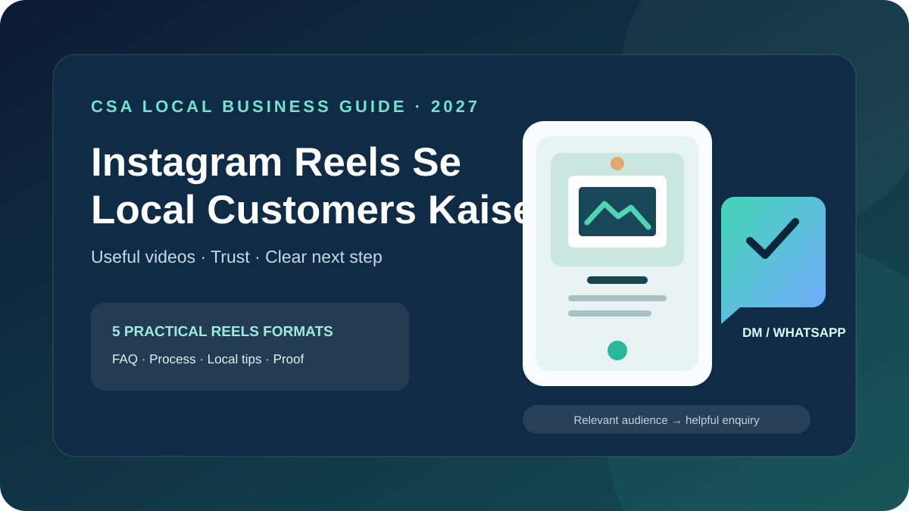
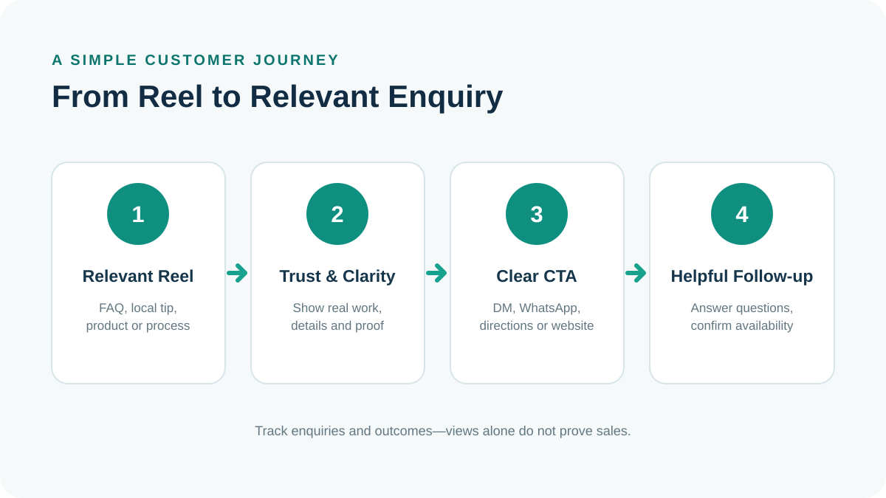

Local Businesses Ke Liye Instagram Reels Se Customers Kaise Layein? (2027 Guide)
Aaj customers kisi nayi shop, clinic, salon, gym, agency ya service provider ko choose karne se pehle online information dekh sakte hain. Instagram Reels aapke kaam, process aur customer questions ko short video mein explain karne ka ek useful format hai. Lekin sirf views aana business result nahi hota. Is guide mein hum dekhenge ki local business Reels ko trust, relevant enquiries aur clear next steps se kaise connect kar sakte hain—bina reach ya sales ki guarantee diye.

- Local business ke liye Reels ka actual role
- Customer-focused 5 practical Reels formats
- Viral entertainment aur business-growth content ka difference
- Reel se DM, WhatsApp aur store visit tak ka simple funnel
- Common mistakes, FAQs aur measurement tips
1. Local business ke liye Reels ka asli kaam kya hai?
Local business ke liye Instagram Reels ka goal sirf viral hona nahi hona chahiye. Ek useful Reel teen important kaam kar sakti hai:
- Familiarity aur trust: owner, team, location aur actual work ko regularly dekhkar viewer ko business samajhne ka mauka milta hai. Trust time aur real customer experience se banta hai; video alone guarantee nahi karta.
- Problem aur solution clarity: customer ko samajh aaye ki aap kya service dete hain, process kaisa hai, kis type ke customer ke liye relevant hain aur unke common doubt ka answer kya hai.
- Action trigger: viewer ko ek simple next step mile—DM, WhatsApp, phone, directions, website ya appointment details.
Reel banane se pehle ek sawal poochhein: “Is video ko dekhne ke baad sahi local customer kya samajh payega ya kya action le payega?” Agar jawab clear nahi, toh concept ko aur specific banayein.
2. Customers tak pahunchne ke 5 practical Reels formats
Format 1: Common mistakes aur buyer myths
Customer purchase ya booking se pehle galti karne se darta hai. Uske common doubts ko simple language mein clear karein. Example: “Service book karne se pehle ye 3 points check karein—scope, timeline aur after-service support.” Apne industry ke real FAQs choose karein; fear-based ya misleading claims se bachein.
Format 2: Behind-the-scenes aur quality process
Final product ke saath process bhi dikhayein: preparation, cleanliness, equipment, quality checks, packaging ya team workflow. 20–40 second ka short sequence ek example ho sakta hai, fixed duration rule nahi. Customer, staff ya private workspace record karne se pehle permission aur privacy ka dhyan rakhein.
Format 3: Before / after ya problem-to-solution
Real project ka starting challenge, kiye gaye steps aur actual outcome explain karein. Comparison fair aur representative ho; lighting, angle ya editing se result ko artificially exaggerate na karein. Clinic, salon, fitness ya personal-service businesses mein customer consent, sensitive information aur applicable professional advertising rules ka extra dhyan rakhein. Health outcomes ya guaranteed results ka unsupported claim na karein.
Format 4: Local context aur seasonal relevance
Apne city, neighbourhood, season, festival ya local customer needs se related practical information share karein. Example: monsoon mein product care, festival booking timeline, summer service preparation ya local delivery coverage. Location ka naam tabhi use karein jab service waqai us area mein available ho.
Format 5: Frequently asked questions (FAQ) Reels
Phone, counter ya DM par baar-baar poochhe jaane wale 5–7 questions note karein. Har Reel mein ek sawal ka direct answer dein—price kaise decide hota hai, appointment kaise milegi, service mein kya included hai, turnaround time kya hai, ya location kahan hai. Exact price aur availability publish karte waqt latest details confirm karein.

3. Viral timepass Reels vs. customer-focused business Reels
| Aspect | Entertainment-only Reel | Customer-focused business Reel |
|---|---|---|
| Main focus | Trend ya random entertainment | Customer problem, trust aur relevant offer / service |
| Viewer profile | Broad audience; local relevance uncertain | Relevant niche, city ya service-area audience ko target karne wala topic |
| Caption & profile | Business details unclear ho sakti hain | Service, location, contact aur next step clear |
| Viewer action | Likes ya temporary views | Profile visits, saves, DMs, WhatsApp clicks ya directions requests jaise signals |
| Business learning | Sales relevance samajhna mushkil | Specific topic aur CTA ko enquiry quality se compare kar sakte hain |
Yaad rakhein: Entertainment content bhi brand personality build kar sakta hai. Farq yeh hai ki har post ko sales pitch banana zaroori nahi, lekin business profile par useful information aur clear contact path available hona chahiye.
4. Reel se customer tak: simple conversion funnel
- Hook (opening seconds): local customer ki problem, need ya useful outcome ko turant identify karein. Example: “Amravati mein salon appointment book karne se pehle ye 3 cheezein poochhein.” Sirf tab city mention karein jab business sach mein wahan serve karta ho.
- Value (main video): ek focused tip, process demo, product detail ya FAQ answer dein. Visuals readable rakhein, audio clear ho aur claims verifiable hon.
- One clear CTA: “Available slots ke liye DM karein”, “WhatsApp par service details lein” ya “Directions ke liye profile ka address dekhein.” Har Reel mein ek primary action choose karein.
- Profile aur local presence ready rakhein: bio mein service area, business category aur contact option clear ho. Highlights mein services, FAQs, process, customer feedback (permission ke saath) aur location rakhein. Google Business Profile, website aur social profile par address, hours aur phone consistent rakhein.
- Prompt, helpful response: DM ya WhatsApp enquiry ka clear jawab dein. Price, timing, availability aur booking conditions transparent rakhein. Sirf zaroori customer information collect karein.
5. Local business owners ki 4 common galtiyan
- Har Reel mein sirf “Aao aur kharido” kehna: continuous sales pitch se viewer ko value nahi milti. Helpful tips, product education aur real process ko content mix mein rakhein.
- Lamba intro aur delayed point: pehle hi line mein topic aur viewer ka benefit batayein. Brand introduction ko short rakhein.
- Captions aur on-screen text skip karna: clear subtitles aur readable text un viewers ki help karte hain jo sound off karke dekhte hain. Text ko screen edges se door rakhein.
- Unrealistic posting pressure: ek-do posts ke baad ruk jana ya quality compromise karke daily publish karna dono avoid karein. Batch shooting aur manageable schedule banayein.
6. Views ke aage: Reels ka business impact kaise measure karein?
Har Reel ke liye ek simple tracker rakhein: publish date, topic, format, location/service area, reach, watch-time/retention indicators (jo Instagram Insights mein available hon), saves, shares, profile visits, website taps, DMs, WhatsApp enquiries aur qualified leads. Har metric har account ya format mein same tarah available nahi hota, isliye apne Professional Dashboard ke current insights ko follow karein.
Enquiry source samajhne ke liye customer se politely poochhein: “Aapko hamare baare mein kahan se pata chala?” Reel-specific CTA ya trackable landing page bhi use kar sakte hain. Sirf views ko sales ka proof na samjhein. Enquiry quality, appointment/show-up aur actual sales ko alag track karein; results ko seasonality, offer aur response time ke context mein samjhein.
7. Ek manageable weekly Reels plan ka example
- Monday — FAQ: ek common buyer question ka answer.
- Wednesday — Process: behind-the-scenes ya quality check.
- Friday — Local value: seasonal tip, neighbourhood relevance ya service-area information.
- Weekend — Proof / offer: customer permission ke saath real work sample, product demo ya transparent offer details.
Yeh sirf ek sample cadence hai, Instagram ka fixed ranking formula nahi. Agar team chhoti hai, hafte mein 2–3 quality videos se shuruaat karke Insights aur enquiry quality ke basis par schedule adjust karein.
Frequently asked questions
Kya chhote local business ke liye Instagram Reels se real customers mil sakte hain?
Haan, useful aur relevant Reels local audience ko business samajhne, trust build karne aur enquiry ka next step dhoondhne mein madad kar sakti hain. Customer ya sale ki guarantee nahi hoti; results offer, location, audience aur execution par depend karte hain.
Hafte mein kitni Reels post karna practical hai?
Ek busy business owner ke liye hafte mein 3–5 planned Reels ek possible starting point ho sakta hai, agar quality aur customer response maintain ho. Yeh universal algorithm rule nahi. Apne time, team aur insights ke hisaab se cadence set karein.
Kya business Reels ke liye expensive camera zaroori hai?
Nahi. Smartphone, stable framing, sufficient light, clean audio aur clear message se shuruaat ki ja sakti hai. Equipment ko business ki actual production needs aur budget ke hisaab se upgrade karein.
Business owners shooting aur editing ka time kaise bachayein?
Batch shooting, repeatable shot lists, reusable caption templates aur organized editing workflow se production time manage kiya ja sakta hai. Professional support bhi ek option hai.
Useful tools, services aur further reading
- Creator Packaging Kit — hooks, captions aur hashtags plan karne ke liye.
- CSA Services — Reels editing, graphic design, video production aur digital support ki details.
- Contact Creator Support Amravati — local business content ya production consultation ke liye.
- 2027 Creator Growth Blueprint — content planning, retention aur multi-platform workflow.
- YouTube Se Coaching Students Kaise Layein? — educators ke liye content-to-enquiry framework.
- YouTube Thumbnail CTR Guide — clear aur mobile-friendly video packaging.
- AdSense-Ready Blog Checklist — content quality aur website trust elements.
Official references: Instagram Help Center · Meta for Business learning resources · Google Search Central: Helpful, reliable, people-first content.
About the author: Rajkumar Chavhan, Founder of Creator Support Amravati, is described by the author as a digital marketing specialist with 8+ years of experience. His work includes social media content, Reels editing, graphic design, SEO, website development and studio production for businesses, creators and brands. Learn about CSA.
Editorial disclosure: Yeh guide educational aur informational purpose ke liye hai. Reels performance, enquiries, customer visits, rankings ya sales ki guarantee nahi di jaati. Platform features aur recommendation systems badal sakte hain; apne account ke current insights aur business context ke hisaab se strategy adapt karein. Content standards aur corrections ke liye CSA Editorial Policy padhein. Production aur design support ke liye Creator Support Amravati se contact karein.